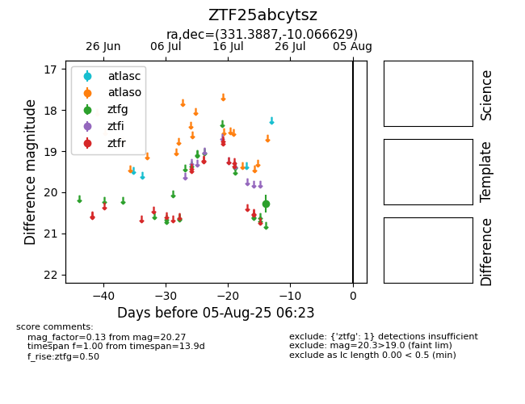

Target ZTF25abcytsz at 2025-08-06 17:45, see:
FINK: fink-portal.org/ZTF25abcytsz
Lasair: lasair-ztf.lsst.ac.uk/objects/ZTF25abcytsz
ALeRCE: alerce.online/object/ZTF25abcytsz
alt names
ZTF25abcytsz (ztf,fink)
coordinates:
equatorial (ra, dec) = (331.3887,-10.06663)
galactic (l, b) = (48.4331,-47.41711)
photometry
last ztfg=20.27
1 ztfg detections
